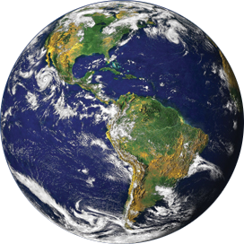
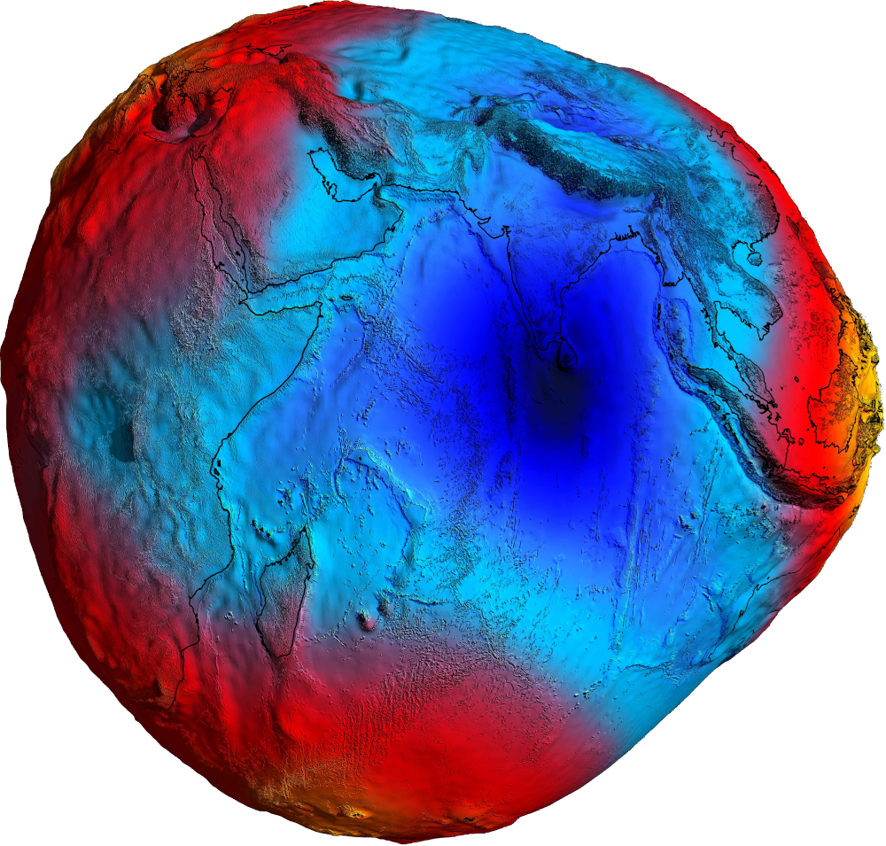
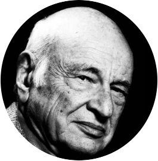
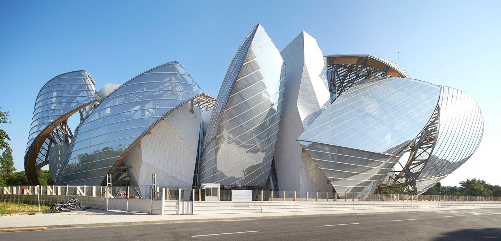
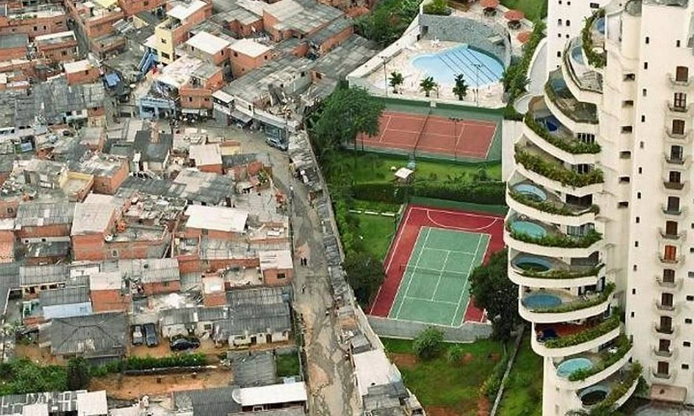
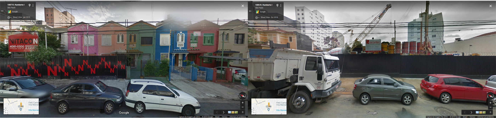
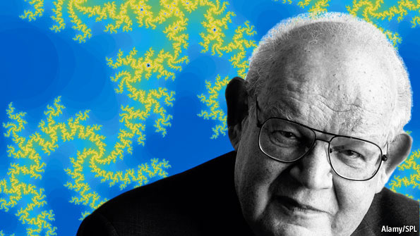
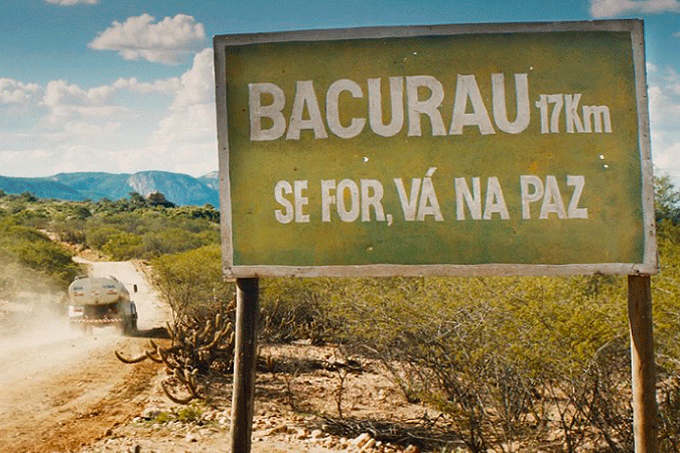
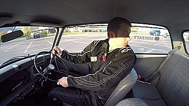

COMPLEXIDADE
E ARQUITETURA:
Desvendando a inteligência coletiva construída na cidade
por Fernando Gomes

http://bit.ly/mudaresseendereco
#quem_eu_sou {Fernando Gomes}
#um ser imcompleto, em formação, ∞
#programador desde 1985, 8 anos {faça as contas}
#empreendedor, 1994
#analista de sistemas, 1998
#depressão, 2012
#arquiteto e urbanista -> premio -> prefeitura, 2019
#quiz {CIÊNCIA}
 Essa imagem, dessa forma só foi vista a partir de 1968 Qual o formato da terra?
#hipótese {geóide disforme |
arquitetura é ciência também}

Fonte: Agência Espacial Europeia, baseado em imagens do satélite Goce considerando a gravidade do geoide sem a ação de marés e de correntes ocêanicas. 2011
“Arquitetura e consequentemente, o Urbanismo é a ciência que estuda o habitat humano em toda a sua complexidade, para todas as escalas: do objeto à megalópole, onde quer que um humano habite”(GOMES, 2019, p.6)
00 arquitetos e urbanistas
00 "pessoas normais"
{AVISO LEGAL}
A única verdade absoluta dessa apresentação é que ela não contém nenhuma verdade absoluta
#introdução {Que tipo de problema é a cidade?}
"Esse livro é um ataque ..." (JACOBS, 1961, p. 1)
título do último capítulo
"Que tipo de problema é a cidade?"
#introdução {Que tipo de problema é a cidade?}
“Como as ciências biológicas, as cidades são problemas de complexidade organizada.”
(JACOBS, 1961, p. 482))
#introdução {Que tipo de problema é a cidade?}
 A cidade não é uma árvore. Não no sentido literal de galhos e folhas, mas no sentido abstrato de estrutura (ALEXANDER, 1961)
A cidade não é uma árvore. Não no sentido literal de galhos e folhas, mas no sentido abstrato de estrutura (ALEXANDER, 1961)
- arquiteto, urbanista e matemático austríaco
- 4.000 páginas de textos publicados, além dos 13 livros escritos durante décadas de pesquisa
- ementas das matérias dos cursos de arquitetura no Brasil?
- "Uma linguagem de padrões"
 Diagrama produzido pelo próprio autor, referênciando a clássica comparação de Alexander (1961)
Diagrama produzido pelo próprio autor, referênciando a clássica comparação de Alexander (1961)
#introdução {complex(c)idade}
 “Complexidade é um tecido (complexus: o que é tecido junto) de constituintes heterogêneas inseparavelmente associadas: ela coloca o paradoxo do uno e do múltiplo.” (MORIN, 2015, p. 13)#introdução {complex(c)idade}
“a cidade é a mais complexa das invenções humanas, … na confluência da natureza com o artefato” (LÉVI-STRAUSS, 1954, p. 137-138 apud MOUDON, 1997, p. 3)
#complexa != COMPLICADA
 fonte: Word Art Foundations, edifício da Fundação Louis Vuitton, projetada por Frank Ghery, inaugurada em 2014, Jardin d'Acclimatation, Paris, França3.850 m2 | €780.000.000 | €202.500/m2 | R$ 900.000,00 por m2
#determinismo == 🙈🙈🙈
 fonte: Frank Ghery reagindo em entrevista após ser perguntado se sua própria arquitetura não era apenas espetáculo. Ele mesmo descreveu que 98% da arquitetura moderna seria "merda" 💩💩💩
fonte: Frank Ghery reagindo em entrevista após ser perguntado se sua própria arquitetura não era apenas espetáculo. Ele mesmo descreveu que 98% da arquitetura moderna seria "merda" 💩💩💩
#complexidade {falta de vocação para enxerga-la}
 fonte: Amplamente divulgada de revistas dominicais a grupos do WhatsApp. Qual seria sua legenda?#recorte {Vila Mariana}
 fonte: Próprio autor com dados do Geosampa. Áreas definidas como ZEU (Zonas Eixo de Estruturação da Transformação Urbana) pelo PDE (Plano Diretor Estratégico). As ZEUs somadas equivalem a aproximadamente a área total de muitos municípios de São Paulo como Itapevi, Itaquaquecetuba e Vinhedo
fonte: Próprio autor com dados do Geosampa. Áreas definidas como ZEU (Zonas Eixo de Estruturação da Transformação Urbana) pelo PDE (Plano Diretor Estratégico). As ZEUs somadas equivalem a aproximadamente a área total de muitos municípios de São Paulo como Itapevi, Itaquaquecetuba e Vinhedo

fonte: Próprio autor com base dos dados georeferenciados do PDE no Geosampa.
#justificativa {o paradoxo}
 fonte: Próprio autor com base na legislação da PMSP. Salientando os resultados de adensamento construtivos em um terreno hipotético com testada de 7 metros a esquerda e com 14 metros a direita.
fonte: Próprio autor com base na legislação da PMSP. Salientando os resultados de adensamento construtivos em um terreno hipotético com testada de 7 metros a esquerda e com 14 metros a direita.
#objetivo {diversidade, cade você? ...}
 fonte: Google Street View em janeiro de 2015 a esquerda e fevereiro de 2018 a direita, na Rua Humberto I, altura do número 1005#método { ... eu vim aqui só pra te ver}
😒 A forma segue a função
😍 A forma contém informação
#linguagem {COMPLEXIDADE ==> MATEMÁTICA}
 Benoit Mandelbrot, matemático francês, nascido em 1924, falecido em 2010, fez seu grande descobrimento científico com mais de 50 anos
“A Matemática, sendo uma linguagem, serve não só para informar, mas também para seduzir …”
(MANDELBROT, 1991, p. 26)
... {MATEMÁTICA ==> 😈😈😈}
... porém, frequentemente a matemática é usada para aterrorizar!
Fonte: Cultura da internet, mais conhecida como meme, nesse caso a Momo#GeoSampa {Município de São Paulo}
2.817.744 edificações
1.986.084 lotes
96 distritos
e muito mais ... (Lidar 3D em breve!)
😍 😍 😍
#método {taxonomia numérica}

#resultados {A morfologia da Vila Mariana}

#complexidade {padrões, o que faz sentido?}
 Quantas possibilidades de agrupamento de 100 pontos?
Quantas possibilidades de agrupamento de 100 pontos?
- 1 milhão (1 x 106)
- 1 bilhão (1 x 109)
- 1 trilhão (1 x 1012)
- 1 quatrilhão (1 x 1015)
- ... 😕 🤔
1,26 nonilhões (1,26 x 1030)
1.260.000.000.000.
000.000.000.
000.000.000
😱 😱 😱
 fonte: próprio autor, proporção numérica de grupos de tipos encontrados no distrito da Vila Mariana
fonte: próprio autor, proporção numérica de grupos de tipos encontrados no distrito da Vila Mariana
Efeito Mega-Sena
 fonte: wikimedia.org, bilhete da Mega-Sena ilustrando o efeito que a ilusão estatística pode gerar.
fonte: wikimedia.org, bilhete da Mega-Sena ilustrando o efeito que a ilusão estatística pode gerar.
Efeito Bacurau
 fonte: obrigatória: Assistir Bacurau! fonte: wikimedia.org, peça de lego ilustrando o pequeno lote como um comoditie
fonte: wikimedia.org, peça de lego ilustrando o pequeno lote como um comoditie
 fonte: GoogleMaps. Eixamples em Barcelona, Espanha. Detalhes para as quadras planejadas por Cerdrá, sem recuos laterais entre os edifícios.
fonte: GoogleMaps. Eixamples em Barcelona, Espanha. Detalhes para as quadras planejadas por Cerdrá, sem recuos laterais entre os edifícios.
{para o equilíbrio, mudanças mínimas}
fonte: PopulumRH.com. Ilustração representando que pequenas variações podem reestabelecer ou comprometer o equilíbrio.#resultados{morfologia com óculos de complexidade}
 fonte: Próprio autor. Elevação esquemática do sombreamento gerado por dois edifícios na Vila Mariana, no período de um ano, no momento do dia em que o sol está mais alto. A esquerda um edifício proposto com 8 pavimentos sem recuos laterais e a direita um edifício com 14 pavimentos, recuado do lote vizinho por 3 metros conforme a legislação vigente.
fonte: Próprio autor. Elevação esquemática do sombreamento gerado por dois edifícios na Vila Mariana, no período de um ano, no momento do dia em que o sol está mais alto. A esquerda um edifício proposto com 8 pavimentos sem recuos laterais e a direita um edifício com 14 pavimentos, recuado do lote vizinho por 3 metros conforme a legislação vigente.
#resultados{morfologia com óculos de complexidade}
 fonte: AutoEsporte (g1.com) "Inglês entra para o Guinness ao fazer baliza de ré mais apertada do mundo" fonte: Proprio autor. Dimensão de uma vaga de veículo de passeio, ainda são necessários mais pelo menos 3 metros para o espaço de manobra, quano o ideal seriam mais 5 metros, totalizando 10 metros.#resultados{morfologia com óculos de complexidade}
fonte: clickapartamentos.com.br. "Este empreendimento está sendo considerado uns dos mais interessantes de São Paulo. O Curitiba 381 mistura requinte e muita sofisticação em um só lugar. Situada em região nobre de São Paulo com vista privilegiada para o parque do Ibirapuera"#considerações_finais{... mudanças mínimas}
 fonte: mrlovenstein.com. Inspirado no efeito borboleta descoberto por Lorenz.
fonte: mrlovenstein.com. Inspirado no efeito borboleta descoberto por Lorenz.
#considerações finais {Praxis}
“não há revolução com verbalismo, nem tampouco com ativismo, mas com práxis, portanto, com reflexão e ação incidindo sobre as estruturas a serem transformadas” (FREIRE, 1987, p.122)
#obrigado {@feromes}